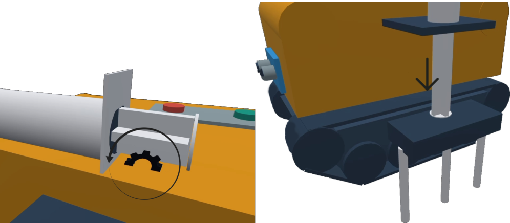

A área de produção de citros e exportação dos frutos geram muitas formas de renda em plantações
ou na produção de refeições com os frutos, porém, pouco se difunde em relação a automação
da germinação das árvores de citros, que por sua vez, impedem uma eficiência no momento de germinar as sementes.
Tendo em mente desses problemas, o grupo Citrus-car está desenvolvendo um robô com a aparência de um trator
que tem como objetivo auxiliar no plantio de citros em específico o de limão cravo, sendo feito
utilizando o arduino uno como base, além de possuir diversos componentes para auxiliá lo durante
o processo de plantio.
Como o projeto funciona
Para realizar o processo de criar buracos nos tubetes, o carrinho irá utilizar duas seringas, uma pequena estrutura para realizar os furos e um servo motor com uma potência pequena, mas que consiga fazer os buracos. Ira funcionar da seguinte forma: o servo
motor irá se ativar, impulsionando a seringa 1 para frente, empurrando a ferramenta e criando o burraco.

Fonte: Próprio autor
O projeto está implantado com um sensor ultrassônico que possui a função de detectar
obstáculos no caminho e mandar sinais para o projeto para se desviar desse obstáculo impedindo assim a sua colisão com o mesmo.